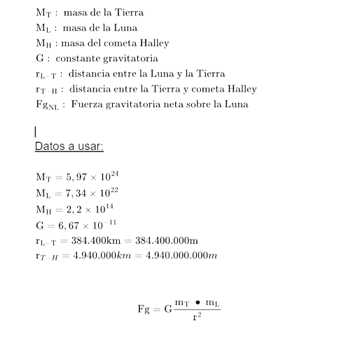

Marco Teórico
ANTECEDENTES (INVESTIGACIONES PREVIAS)
Los científicos hallan que la Luna se formó por el choque de la Tierra con otro planeta.
La Luna podría haberse creado a causa de la colisión de la Tierra con otro planeta. Esa es la teoría que se
sugiere tras un estudio de roca lunar que ha desarrollado la NASA y que apoya la llamada teoría del 'Impacto
Gigante' que describe cómo se desarrolló nuestro satélite.
La teoría del 'Impacto Gigante', o 'Big Splash', especula que la eyección de restos de una colisión entre la
Tierra en formación y un planeta diminuto del tamaño de Marte llamado Theia hizo que se formara lo que es
ahora la Luna. La teoría sugiere que esta colisión habría ocurrido hace unos 4.500 millones de años, cuando
el Sistema Solar era aún muy joven y tenía unos 100 millones de años.
En el estudio, publicado en la revista científica 'Proceedings of the National Academy of Sciences', Simon y
sus colegas se centraron en la cantidad y tipos de cloro en las rocas lunares. Los investigadores eligieron
el cloro porque es un elemento volátil, lo que significa que se vaporiza a una temperatura relativamente
baja.
"La pérdida de cloro de la Luna probablemente ocurrió durante un evento de alta energía y calor, lo que
apunta a la teoría del 'Impacto Gigante'"
Cuando los investigadores cuantificaron la cantidad de cloro ligero en la composición de las rocas lunares,
encontraron un suministro reducido del elemento en relación con lo que encuentran en las rocas terrestres.
Además, la composición de las rocas lunares también tenía una cantidad relativamente alta de cloro pesado.
Las designaciones de ligero y pesado son referencias a las diferentes masas atómicas de los dos isótopos.
Así se prepara la NASA para un posible impacto de un asteroide contra la Tierra.
Un asteroide se acerca velozmente a la Tierra. Mide entre 100 y 300 metros y, de llegar a impactar nuestro
planeta, liberaría entre 100.000 y 800.000 kilotones de energía, lo que causaría una gran devastación.
La Red Internacional de Alerta de Asteroides (IAWN, por sus siglas en inglés), calcula que el asteroide
pasará muy cerca de nosotros dentro de ocho años (el 29 de abril de 2027) y tendrá un 10% de posibilidades
de embestir la Tierra.
Ante esta amenaza, los científicos tienen una misión a contrarreloj: evitar una catástrofe sin precedentes
en el planeta.
En realidad, es parte de un ejercicio en el que durante esta semana participan astrónomos de distintas
partes del mundo, reunidos en la Conferencia de Defensa Planetaria convocada por la Academia Internacional
de Astronáutica en Washington D.C, Estados Unidos.
Dentro de la conferencia, uno de los puntos centrales es este simulacro diseñado por la NASA, en el que los
expertos deben diseñar estrategias de preparación en caso de que algún día un asteroide se acerque
peligrosamente a la Tierra de manera real.
"Esta es una amenaza que podría ocurrir, aunque es muy poco probable", le dijo a la cadena NPR Paul Chodas,
director del Centro de Estudios para Objetos Cercanos a la Tierra de la NASA (CNEOS, por sus siglas en
inglés), quien diseñó el ejercicio.
"Nuestro objetivo es seguir todos los pasos que deberíamos llevar a cabo", dice Chodas refiriéndose a cómo
se preparan para un posible escenario real.
Posibles causas y consecuencia de este fenómeno:
Causas:
La gravitación universal de Newton, explica que dos objetos se atraen entre sí con una fuerza que es
proporcional a sus masas: es decir que mientras más masa tienen, más atracción hay. Pero también esa fuerza
va disminuyendo exponencialmente con la distancia: a mayor distancia, menor atracción.
Quizá lo más importante de esta descripción es que la gravitación funciona en los dos sentidos: los objetos
se atraen mutuamente. Esto quiere decir que la Tierra atrae a la Luna, pero la Luna también atrae a la
Tierra.
Si esa atracción va en ambos sentidos, podríamos preguntarnos, por qué la Luna no se precipita hacia nuestro
planeta.
Aunque en las noches de luna llena nos parezca muy cercana, nuestro satélite está a casi 400 mil kilómetros
de distancia.
Esa es una distancia grande pero es suficiente para que la Tierra y la Luna se atraigan una a la otra, pero
además para que haya un equilibro en esta atracción.
Podríamos incluso decir que la Luna y la Tierra están cayendo una hacia la otra, de manera infinita, pero en
lugar de acercarse y chocar, lo que sucede es que la Luna orbita a nuestro planeta.
Ese es un efecto similar a lo que ocurre con los satélites artificiales que están en órbita, o lo que pasa
con la famosa Estación Espacial Internacional: en realidad es como si estuvieran cayendo a la Tierra
constantemente, sin “terminar” de caer.
Pero aún así, podríamos preguntarnos si no podría suceder algo que desequilibrara el balance en la atracción
e hiciera que la Luna se precipitara hacia nuestro planeta.
Si pensamos que pudiera existir una fuerza misteriosa que empujara a la Luna más cerca de la Tierra: eso
haría que la atracción entre ambos objetos fuera mayor, pero no implicaría que la Luna se precipitara al
instante.
En realidad el proceso sería mucho más complejo que eso, pues la Luna también gira sobre su eje y el impulso
de ese movimiento también influye en su órbita.
Al respecto, Rhett Allain, que es profesor de física, aplicó la ley de la gravitación universal a diversos
escenarios en los que la Luna estuviera más cerca de la Tierra.
Así, Allain encontró que la única forma en que sería posible que la Luna “cayera” hacia nosotros es si
dejara de moverse: es decir que no avanzara en su órbita, ni rotara
Consecuencias:
Tras el impacto, la luna se desintegra y el planeta se convertiría en una bola inhabitable de roca fundida.
El impacto afectaría a toda la tierra, donde la parte del impacto se pondría incandescente y la cara
posterior sufriría numerosas explosiones volcánicas que también la destruirían.
¿Por qué aún no sucede este fenómeno?:
La Luna de la Tierra es la quinta más grande de todo el sistema solar, y es más grande que el planeta
Plutón. La gravedad de la Tierra atrae a la Luna, y la mantiene en su órbita. La órbita de la Luna es un
círculo casi perfecto, de manera que la Luna siempre se encuentra a, aproximadamente, 384 400 km. de
distancia. Aún cuando el Sol es mucho más grande que la Luna, la Luna se encuentra más cerca, de manera que
en el cielo pareciera ser del mismo tamaño que el Sol.
Lo que impide que la Luna caiga sobre la Tierra es su movimiento, que contrarresta la fuerza de la gravedad
y la mantiene en órbita. Esa misma conjunción de fuerzas mantenía a la Tierra y a los planetas girando
permanentemente en sus órbitas alrededor del Sol.
La Tierra atraía a la Luna, sí, pero con menor fuerza que a una manzana, porque la Luna estaba más lejos.
Newton decidió comparar la caída de una piedra (o una manzana) sobre la superficie terrestre con el
movimiento de la Luna, y de la comparación de las fuerzas "astronómicas" que actúan sobre la Luna con las
fuerzas "terrestres" que actúan sobre los objetos de la vida cotidiana, dedujo la ley general de la gravedad
Además la Luna está en órbita porque se mueve lo suficientemente rápido como para evitar la colisión con la
Tierra, pero no lo suficiente como para liberar su atracción gravitatoria. Así que tal vez si un objeto lo
suficientemente grande lo golpeara, como un extranjero, podría sacarlo de su órbita, pero para desviar
nuestro satélite un objeto tiene que ser "lo suficientemente grande para golpearlo a la velocidad y el
ángulo adecuados". En resumen, parece una contingencia muy difícil.
Cómo evitar esta catástrofe:
La manera de evitar que la luna colisione con la tierra sería mandar cohetes para que impacten con esta así
desviando su órbita como en el proyecto DART
(Double Asteroid Redirection) el problema que tiene poner a prueba esto,
primero es que para generar una explosión capaz de cambiar la órbita de la luna “se necesitarían entre 10
mil millones y 10 billones de megatones de TNT para hacer que la Luna se aleje de la Tierra a toda
velocidad” y actualmente nuestra arma nuclear más potente sería la bomba del “tsar o el emperador de las
bombas” el cual tiene 50 megatones, en segundo lugar el proyecto DART, el cual usamos como referencia (es un
experimento de la nasa para comprobar si
podemos desviar asteroides con nuestras armas nucleares en caso de que estos
caigan a la tierra y provoquen una catástrofe) no está completamente terminado, a qué me refiero con esto,
es que no tiene listos los resultados ya que está en marcha actualmente, el proyecto DART se encuentra en
dirección hacia el asteroide Didymos y debido a eso no se ha confirmado la efectividad de este, y por último
como se mencionó anteriormente nuestra bomba más poderosa tiene 50 megatones, es decir, que se necesitan
200.000.000 bombas nucleares del “tsar o el emperador de las bombas” para para llegar al mínimo aproximado
requerido para mover la luna a toda velocidad. En conclusión, no podríamos salvar a la tierra en caso que la
luna impacte contra esta en los próximos años porque no contamos con la experiencia y el poder nuclear
necesario para conseguir esto.
La primera prueba de una misión de "defensa planetaria" fue un éxito.
La agencia espacial estadounidense NASA confirmó que una roca espacial de 160 m de ancho, conocida como
Dimorphos. Tuvo una alteración de su órbita después de que la sonda Dart la golpeara directamente el mes pasado.
Los investigadores llegaron a la conclusión después de realizar mediciones utilizando una variedad de
telescopios espaciales y terrestres.
La misión fue concebida como una prueba de una estrategia para defender la Tierra contra objetos que puedan
amenazar al planeta. El éxito de Dart demuestra que la idea funcionaría, siempre que se lanzara lo
suficientemente temprano y el objetivo no fuera demasiado grande.
"Esta misión muestra que la NASA se está intentando preparar para cualquier cosa que el universo nos depare",
dijo el jefe de la agencia, Bill Nelson.
"En la NASA hemos demostrado que nos tomamos en serio nuestro papel como defensores del planeta", añadió.
¿Qué ocurrió con la roca?
La agencia espacial publicó una serie de datos este martes para respaldar la afirmación, incluidas nuevas
imágenes del telescopio espacial Hubble y de una pequeña nave espacial italiana que se mantuvo alejada del
impacto a unos 50 km.
La prueba de redirección de doble asteroide (Dart, por sus siglas en inglés) se llevó a cabo a unos 11 millones
de kilómetros de la Tierra.
La sonda, del tamaño de un refrigerador, se dirigió en un impacto directo contra Dimorphos a 22.000 km/h.
Esa roca espacial orbita un objeto mucho más grande (780 m de ancho) llamado Didymos. Antes del impacto, el
tiempo que le tomó a Dimorphos dar una vuelta a su hermano fue de 11 horas y 55 minutos.
La evidencia del telescopio ahora indica que este período orbital se ha reducido a 11 horas y 23 minutos, un
cambio de 32 minutos. Esto corresponde a Dimorphos acercándose a Didymos por "decenas de metros".
La NASA había considerado que sería un éxito un cambio de período mínimo de 73 segundos o más.
Los resultados publicados este martes muestran que Dart superó este punto de referencia en más de 25 veces.
¿Qué más hay que saber de la "defensa planetaria"?
La directora de la misión, la doctora Nancy Chabot, del Laboratorio de Física Aplicada de la Universidad Johns
Hopkins, puso en perspectiva lo ocurrido.
"Este es un cambio del 4% en el período orbital de Dimorphos alrededor de Didymos. Dart solo le dio un pequeño
empujón. Pero si quisieras hacer esto en el futuro, querrías hacerlo con años de anticipación", comentó
"El tiempo de advertencia es realmente clave aquí para permitir que este tipo de desviación de asteroides se use
en el futuro como parte de una estrategia de defensa planetaria mucho más grande".
El doctor Tom Statler, uno de los científicos involucrados en la misión, también tuvo una advertencia sobre el
riesgo de sacar demasiadas conclusiones del experimento.
Los asteroides se presentaron en muchas formas diferentes, explicó. Sus composiciones y constituciones son
diversas, algo que se hace evidente cada vez que una misión ha visitado un nuevo objeto.
"No deberíamos estar demasiado ansiosos por decir que una prueba en un asteroide nos dice exactamente cómo se
comportaría cualquier otro asteroide en una situación similar", enfatizó.
"Pero lo que podemos hacer es usar esta prueba como un punto base para nuestros cálculos físicos en nuestras
simulaciones, los cuales nos dicen cómo deberían comportarse los diferentes tipos de impactos en diferentes
situaciones".
Dentro de 4 años, la Agencia Espacial Europea (ESA) aterrizará tres naves espaciales -conocidas colectivamente
como la misión Hera- en Didymos y Dimorphos para realizar estudios adicionales.
Glosario
Colisión:
Se emplea el término de colisión para representar la situación en la que dos o más
partículas
interaccionan durante un tiempo muy corto. Se supone que las fuerzas impulsivas debidas a la colisión son
mucho más grandes que cualquier otra fuerza externa presente.
El momento lineal total se conserva en las colisiones. Sin embargo, la energía cinética no se conserva
debido a que parte de la energía cinética se transforma en energía térmica y en energía potencial elástica
interna cuando los cuerpos se deforman durante la colisión.
Se define colisión inelástica como la colisión en la cual no se conserva la energía cinética. Cuando dos
objetos que chocan se quedan juntos después del choque se dice que la colisión es perfectamente inelástica.
Por ejemplo, un meteorito que choca con la Tierra.
Fuerza:
Una fuerza puede pensarse como un ente físico que describe la intensidad de las
interacciones entre
los objetos, estrechamente relacionado con la energía. Para la mecánica clásica, toda fuerza está compuesta
por una magnitud y una dirección, con lo cual se la denota con un vector. Esto significa que se trata de una
magnitud vectorial, no escalar.
Periodo:
Se denomina periodo, al tiempo que tarda el móvil en dar una vuelta completa.
Magnitud:
La magnitud física es una propiedad de los cuerpos y elementos que permite que sean
medibles y, en
algunos casos, observables.
Velocidad:
La velocidad es una magnitud física que expresa la relación entre el espacio recorrido
por un
objeto, el tiempo empleado para ello y su dirección.
Satélite:
En el contexto de los vuelos espaciales, un satélite es un objeto que ha sido puesto en
órbita
intencionadamente. Un satélite natural es un cuerpo celeste que orbita alrededor de un planeta.
Asteroide:
Los asteroides, a veces llamados planetas menores, son restos rocosos que quedaron de
la
formación inicial de nuestro Sistema Solar hace unos 4.600 millones de años.
Masa:
Magnitud física que expresa la cantidad de materia de un cuerpo, medida por la inercia de
este, que
determina la aceleración producida por una fuerza que actúa sobre él, y cuya unidad en el sistema
internacional es el kilogramo (kg).
Isótopos: Se denomina isótopos a los átomos de un mismo elemento, cuyos núcleos tienen una cantidad
diferente de neutrones, y por lo tanto, difieren en número másico.
Volátil:
desde el punto de vista químico, físico y de la termodinámica es una medida de la
tendencia de una
sustancia a pasar a la fase de vapor. Se ha definido también como una medida de la facilidad con que una
sustancia se evapora. A una temperatura dada, las sustancias con mayor presión de vapor se evaporan más
fácilmente que las sustancias con una menor presión de vapor.
Aunque por lo general se aplica a líquidos, la volatilidad se puede aplicar a materiales sólidos como el
hielo seco (sólido de dióxido de carbono y el cloruro de amonio), que pueden cambiar directamente de sólido
a vapor sin pasar por el estado líquido. Este proceso se denomina sublimación.
Devastación: Procedente de la palabra latina vastatio, devastación expresa tala, destrucción de todos los
objetos materiales de un país, en la que va implícito algo de sistemático y ordenado.
Theia:
es un antiguo planeta hipotético en el Sistema Solar primitivo que, según la hipótesis del
impacto
gigante, chocó con la Tierra primitiva hace unos 4.500 millones de años, y algunos de los escombros
expulsados resultantes se reunieron para formar la Luna.
Además de explicar el gran satélite de la Tierra, la hipótesis de Teia también puede explicar por qué el
núcleo de la Tierra es más grande de lo esperado para un cuerpo de su tamaño; El núcleo y el manto de Teia
se mezclaron con el núcleo y el manto de la Tierra.
Según una versión de la hipótesis, Theia era un troyano terrestre del tamaño de Marte, con un diámetro de
unos 6,102 kilómetros (3,8 mi). Evidencia adicional publicada en 2019 sugiere que Theia podría haberse
formado en el Sistema Solar exterior en lugar del Sistema Solar interior, y que gran parte del agua de la
Tierra se originó en Theia.
Embestir:
Entrar con fuerza en el espacio que ocupa otra cosa o persona. Realizar algo con
violencia sobre
otra persona u objeto.
Fenómeno:
Manifestación de una actividad que se produce en la naturaleza y se percibe a través de
los
sentidos. "un fenómeno físico".
Cosa inmaterial, hecho o suceso que se manifiesta y puede percibirse a través de los sentidos o del
intelecto.
satélite artificial:
En el contexto de los vuelos espaciales, un satélite es un objeto que ha sido
puesto en
órbita intencionadamente. Estos objetos se llaman satélites artificiales para distinguirlos de los satélites
naturales, como la Luna de la Tierra.
Órbita:
es la trayectoria que describe un objeto físico alrededor de otro mientras está bajo la
influencia
de una fuerza central, como la fuerza gravitatoria.
Inhabitable:
Que carece de las condiciones necesarias para poder ser habitado.
Incandescente:
adquiere un color rojo o blanco por haber sido sometido a altas temperaturas,
especialmente
el carbón y los metales.
Kilotones de energía:
Unidad de energía liberada por un explosivo , equivalente a la energía de la
explosión
de 1000 toneladas de trinitrotolueno.
Resultados
Cabe destacar que, estos cálculos se hicieron a partir de un posible escenario, que podría o no pasar. Los
datos que se usaron son totalmente reales, desde la masa de diferentes objetos, la constante de gravitación
universal, hasta las distancias a usar. Sin embargo, sigue siendo una simulación. Hay que recalcar que, la
distancia usada para el cometa Halley con respecto a la Tierra fue en el año 837.


Análisis de Resultados
Tanto en el caso 1, como en el 2, hay tanta distancia entre el cometa Halley y la Luna que las fuerzas que
influyen en ella es muy baja, por lo que no modifica mucho la fuerza neta aplicada sobre nuestro satélite
natural. Pero en caso de que fuera mucho más grande y distancia menor, influiría mucho más en la Luna, y
podría que hasta sacarla de órbita.
Si se diera que un objeto más grande y cercano a la luna interactúe con ella podría haber más cambios, como
los siguientes:
En el caso 1, al estar la Luna entre los objetos (suponiendo que es más grande y está más cerca), al
interactuar dicho objeto con la luna, al lado contrario de la Tierra, disminuye la fuerza gravitatoria de la
Luna con respecto a la Tierra. Como resultado de esto, la luna se alejaría así de su órbita, incluso al
punto de salirse de esta.
En el caso 2, al estar la Luna de un lado y la Tierra y el objeto al otro (suponiendo que el objeto es más
grande y está más cerca), al unirse a la interacción entre la Tierra y la Luna, aumentaría la misma haciendo
así, creando mayor fuerza atracción, desencadenando así, una posible colisión entre nuestro planeta y
satélite natural.